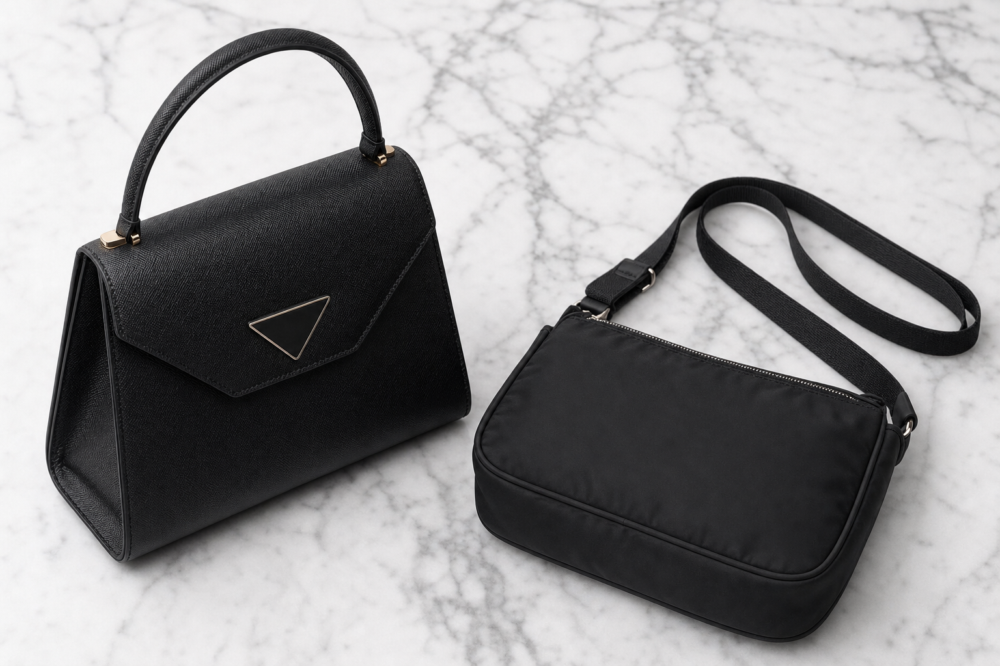

Prada
Die Prada-Klassiker: Zeitlos und unverwüstlich
Drei Modelle, die man kennen muss – von der Street bis zum Büro:
- Re-Edition 2005 Der Inbegriff des Y2K-Revivals. Das Re-Nylon-Material ist extrem unempfindlich gegenüber Regen und Flecken.
- Galleria Die strukturierte Business-Tasche aus kratzfestem Saffiano-Leder. Ein Investment für Jahrzehnte.
- Aimée (neu 2026) Die neue Silhouette der Saison – weich, minimalistisch und absolut zeitlos.